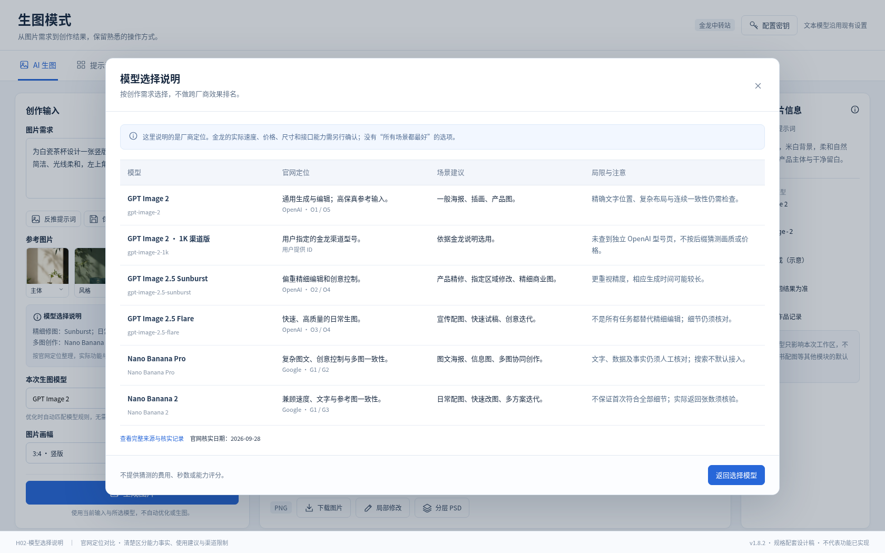
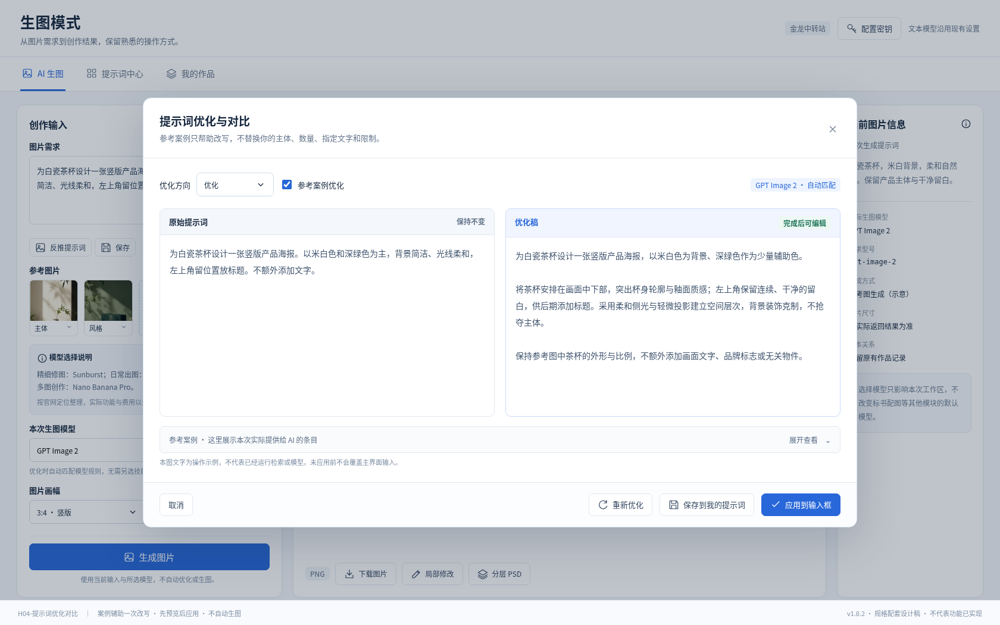
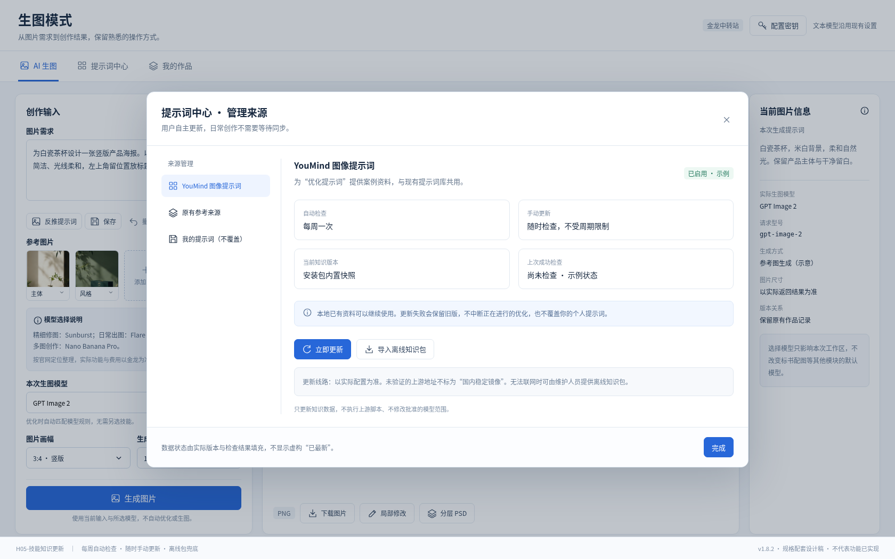
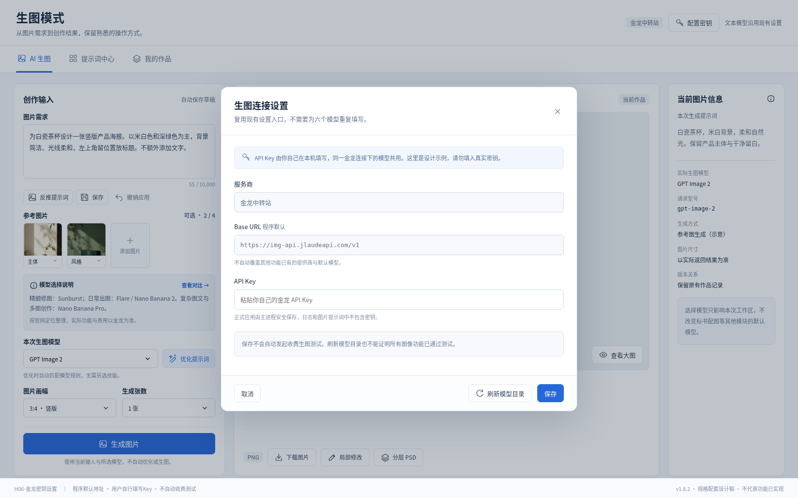
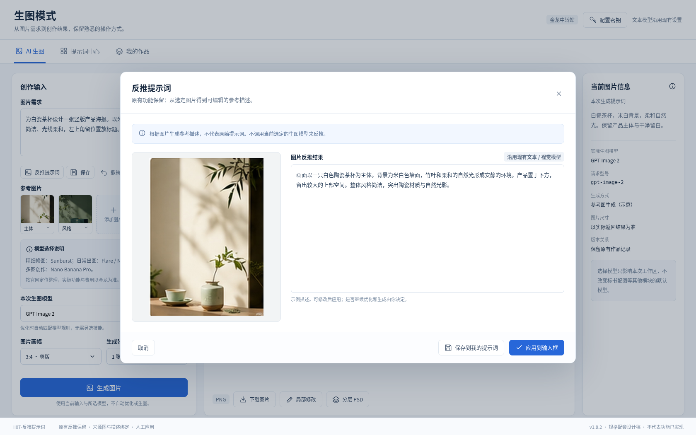

OpenJatoBID v1.8.2 · 七张UI设计
文档R2 · 六个金龙请求ID按用户截图确认。Nano两项不再显示“ID待核实”。布局延续已认可稿；图片和数据仅为设计示意，不是实际模型测试。
打开完整阅读版H01-创作主界面
模型说明在前 · 模型下拉在左 · 优化在右 · 反推原位保留
打开静态界面 · 查看PNGH02-模型选择说明
官网定位对比 · 清楚区分能力事实、使用建议与渠道限制
打开静态界面 · 查看PNG
H03-模型选择列表
六项白名单 · 请求ID已按截图确认 · 不扩大范围
打开静态界面 · 查看PNGH04-提示词优化对比
案例辅助一次改写 · 先预览后应用 · 不自动生图
打开静态界面 · 查看PNG
H05-技能知识更新
每周自动检查 · 随时手动更新 · 离线包兜底
打开静态界面 · 查看PNG
H06-金龙密钥设置
程序默认地址 · 用户自行填写Key · 不自动收费测试
打开静态界面 · 查看PNG
H07-反推提示词
原有反推保留 · 来源图与描述绑定 · 人工应用
打开静态界面 · 查看PNG